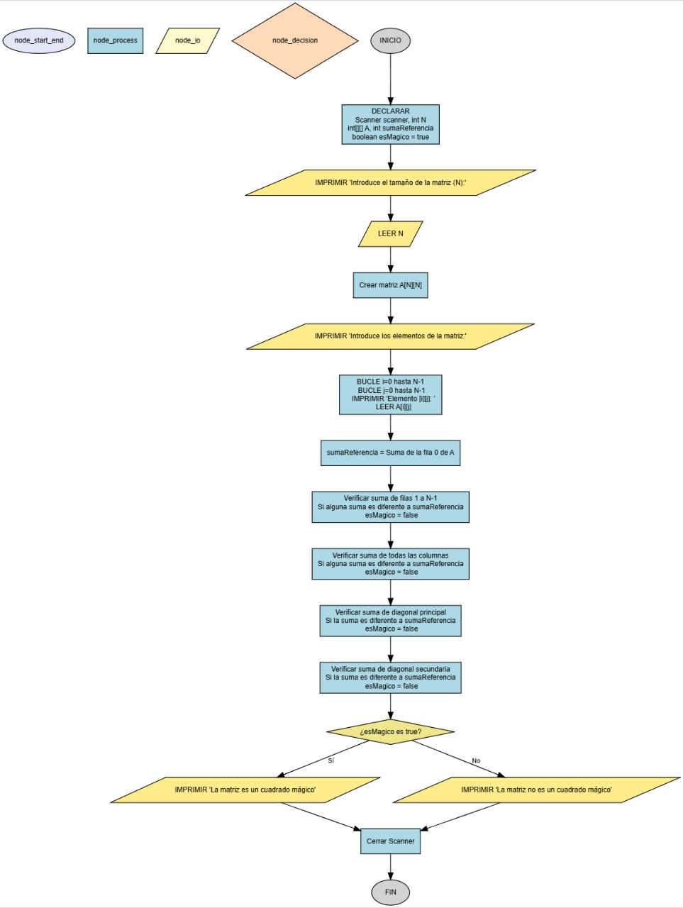

Verificador de Cuadrado Mágico
Un "cuadrado mágico" es una matriz cuadrada donde la suma de los números de cada fila, cada columna y ambas diagonales principales es la misma. Escribe un programa que determine si una matriz ingresada por el usuario es un cuadrado mágico.

Requisitos
Todo el código debe estar dentro del método main.
- Pide al usuario el tamaño de la matriz cuadrada (N).
- Usa bucles anidados para pedir al usuario cada uno de los elementos de la matriz.
- Calcula la suma de la primera fila y úsala como la "suma de referencia".
- Verifica que la suma de todas las demás filas, todas las columnas y ambas diagonales sea igual a la suma de referencia.
- Si todas las sumas son iguales, imprime:
"La matriz es un cuadrado mágico". - Si encuentras una sola suma que sea diferente, imprime:
"La matriz no es un cuadrado mágico".
Ejemplo de uso esperado
Introduce el tamaño de la matriz cuadrada (N): 3
Introduce los elementos de la matriz:
Elemento [0][0]: 8
Elemento [0][1]: 1
Elemento [0][2]: 6
Elemento [1][0]: 3
Elemento [1][1]: 5
Elemento [1][2]: 7
Elemento [2][0]: 4
Elemento [2][1]: 9
Elemento [2][2]: 2
La matriz es un cuadrado mágico